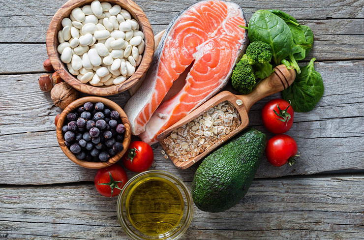

Träning
Det är bra för både kropp och själ att du rör på dig regelbundet. Du blir piggare, starkare och minnet kan förbättras. Du som är vuxen rekommenderas att röra dig en halvtimme om dagen, till exempel ta en rask promenad. Kroppen är byggd för rörelse. Därför är det bra att träna varierat, både kondition, balans och muskelstyrka.

Kost
Hälsosamma kostvanor har en avgörande betydelse för barns utveckling, tillväxt och hälsa vidare i livet. Risken att drabbas av hjärt- och kärlsjukdom kan minska dramatiskt om man äter mycket frukt och grönsaker, fisk och fullkorn samt väljer bra fetter. Upp till en tredjedel av alla cancerfall skulle kunna förebyggas genom goda matvanor, fysisk aktivitet och att hålla en normalvikt.Thailand
Thailand är ett drömresmål för alla åldrar. På din resa till Thailand kan du uppleva kontrastfyllda storstäder, tempel, fantastiska nationalparker och inte minst stränder, som både tillsammans och var för sig kan stjäla ditt hjärta. Oavsett om du föredrar att besöka storstäder, natur eller solsemester kan du vara säker på att få en semester för livet.
Islam
Islam är en monoteistisk religion och bygger från grunden på att Gud är En; En i Sig Själv och inte en treenig gudom eller en fysisk förening med materian. "Tvång skall inte förekomma i trosfrågor. Vad som är rätt handlande är nu klart skilt från fel och synd. Den som förnekar de onda makterna och som tror på Gud, har sannerligen vunnit ett säkert fäste som aldrig ger vika. Gud hör allt, vet allt."